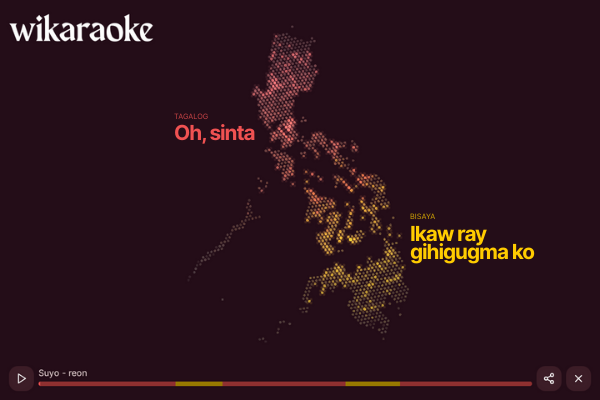
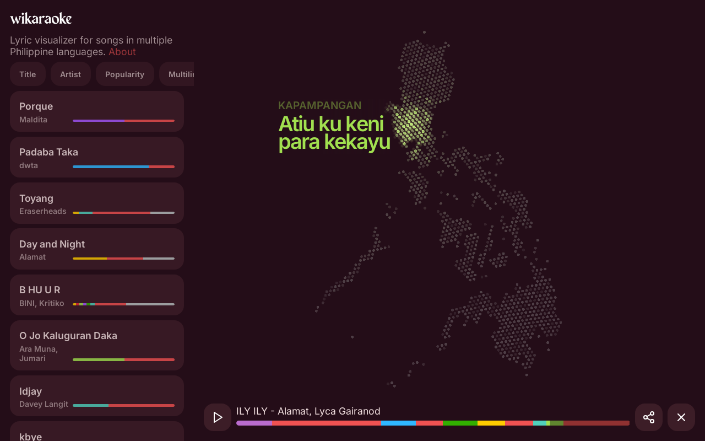
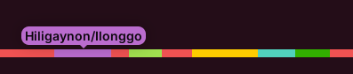
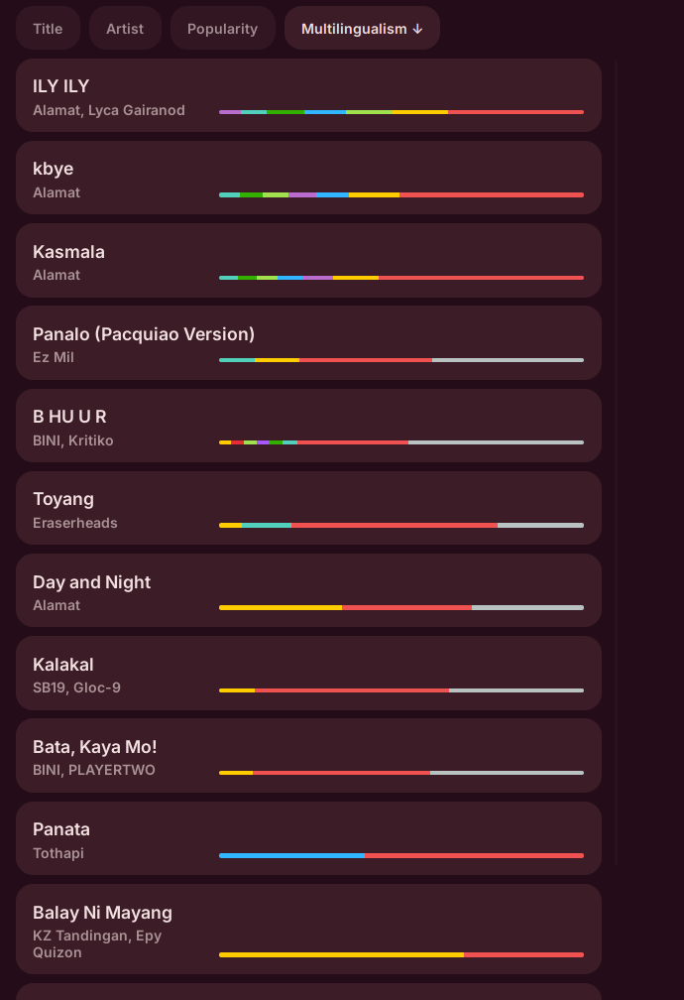
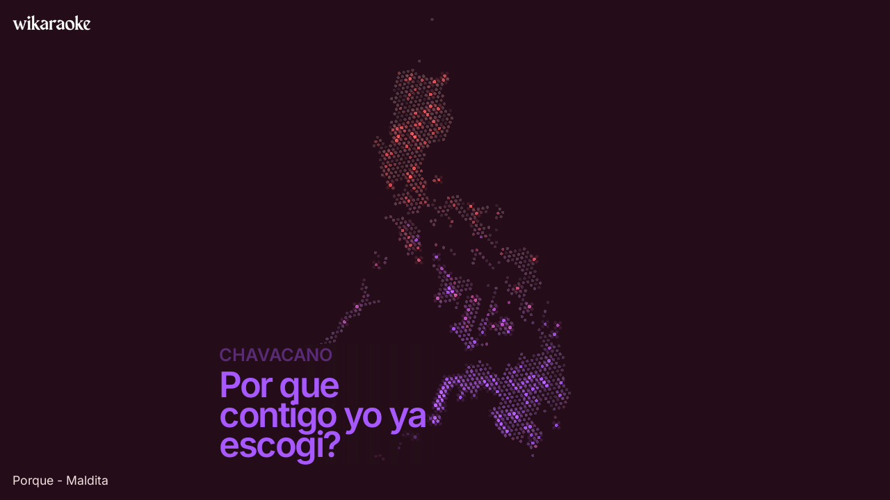

Wikaraoke

Project details
Open the app
- released
- 2025
- role
- creator
- platform
- Web
- tech
- HTML, JS, CSS, PixiJS, YouTube
Philippine multilingual music visualiser
“Wikaraoke” stems from wika (meaning ‘language’) and karaoke (music presented in a way to facilitate sing-alongs). Filipinos love karaoke. Not me though, but I do love music and languages.
The Philippines has over 120 languages. Tagalog, Cebuano, Ilokano, Hiligaynon, Kapampangan, and many more. Since my native tongue is Tagalog/Filipino, the national language of the country, I’ve had very little exposure to other Philippine languages — just enough to barely comprehend a few words here and there in tiny sentences in Kapampangan, Cebuano, or Bikol.
Even though I don’t really understand other Philippine languages, I can still enjoy music in these languages. Based on the fact that songs outside of the lingua franca still reach widespread popularity in the Philippines, sometimes even topping the charts, I know that I’m not alone. As one would say, music breaks barriers.
Wikaraoke is a map-based lyric visualiser for multilingual Philippine music. It’s like karaoke visuals, but overlaid on top of a map, highlighting the main regions where languages in a song are spoken.
Karaoke with a map…
Wikaraoke features a curated set of multilingual songs. When you choose a song, it starts playing using an embedded YouTube player (which saved me the trouble of hosting the audio files themselves).
Lyrics would appear on the map in sync with the music from the YouTube player. Each line of music is associated with a language, floating beside the corresponding region while the it lights up.

It’s fun to see some of the hyperlingual songs light up different parts of the country.
To symbolise music breaking barriers, each line of language sends a colorful shockwave radiating from its region unhindered by borders, terrain, or sea.
Excerpt of BINI - B HU U R.
Annotating the lyrics with language metadata has been one of the most time-consuming parts of making this. As I’m not super familiar with any of the Philippine languages besides my native one, it took a good amount of research to accurately annotate each line with the language it’s in.
Even though LLMs were supposed to be ‘language calculators’ (?), I haven’t had luck in getting ChatGPT to automatically label each lyric with the correct language. It would’ve been an ideal use-case but I don’t think these languages are well represented in their datasets to begin with.
Each language is represented by a unique colour, so annotating a song is like colouring the song’s progress bar in the right colours from start to end. Sounds fun, right?

But an even more fun exercise was fine-tuning lyric timings so they appear on screen in time with the singing. This is important, as good lyric timing complements the audio visualisation part.
The audio visualisation part
The map visualisation responds to the audio, not just the timed lyrics. It flashes and moves with the beat.
Excerpt of Alamat - Dayang.
Since I can’t actually host the audio files (because copyright), I just hosted the analysis files that were derived from the audio. Only the audio analysis data is necessary for the audio-reactive visualisation, after all.
I used a Python script to analyse each of the YouTube videos’ audio tracks to compile a sequence of interesting aural ‘events’. These are basically instructions for the visualisation for when to react and by how much.
// audio event data
// { t: time, d: decibels, f: frequency bucket }
{"t":17.845,"d":-5.37,"f":"M"},
{"t":18.03,"d":-11.73,"f":"L"},
{"t":18.506,"d":-11.64,"f":"L"},
{"t":18.506,"d":-11.75,"f":"M"},
{"t":18.797,"d":-14.14,"f":"H"},
{"t":18.843,"d":-9.24,"f":"M"},
{"t":18.855,"d":-9.92,"f":"L"},
{"t":19.482,"d":-9.34,"f":"M"},
{"t":19.83,"d":-12.46,"f":"L"},
// ...
The script runs frequency analysis over time (Fourier transform thingy over time windows) and detects peaks in each of the low, mid, and high frequency ranges to produce this data.
This analysis was done offline and the resulting data is saved as JSON and hosted on the website.
It’s somewhat of an inefficient encoding, but it works. In a way, the online visualisation has been pre-compiled or pre-baked, or however you want to call it, reacting to the music without actually having access to the audio signal itself.
Multilinguality metric
There’s an option to order the song list by Multilingualism.

To be able to sort songs by multilingualism, multilinguality has to be quantified. So I made it up. Basically, I defined it as how diverse a song is in terms of the languages it uses.
Mathematically, the multilinguality of a song was based on Shannon entropy (which has also been the basis of certain biodiversity measures).
Let wi be the number of unique words for language i from 1 to n, and W be the total count w1 + w2 + ... + wn.
We can compute the proportion (probability) of each language:
pi = wi / W
And so, the Shannon entropy, the Multilinguality is:
M = -w1 ln(w1) - w2 ln(w2) - ... - wn ln(wn)
This entropy value quantifies the diversity of language usage within a song. A higher value means more languages used and/or more balanced usage within the song (more multilingual). A lower value means one or few languages dominate the song (less multilingual). A value of zero means a monolingual song.
Based on the ordering in the screenshot above, I’d say it’s a decent measure!
Publishing
I realised that this isn’t a very interactive kind of application. Once you start playing, further interaction is optional.
The visualisation could be published as a prerecorded video file and enjoyed by others without having to run the webapp itself!
I think posting lyric visualisation videos on YouTube or some other social media would be part of this project. The deliverables are not just the webapp itself.
For this purpose of sharing to social media, I added a fullscreen mode that hides the UI. I’ve used this mode to record the videos in this page.

Fullscreen mode
As of writing I haven’t made any YouTube videos yet, so stay tuned! Meanwhile, check out the app yourself!